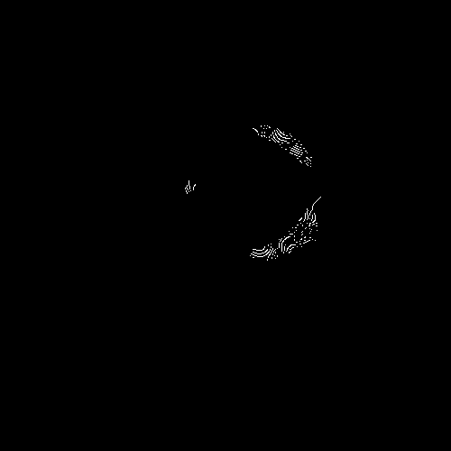
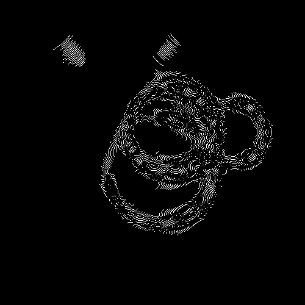
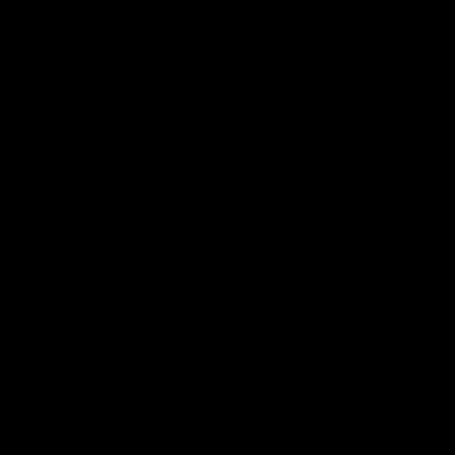
Implementation language: Python (numpy, scipy, opencv, matplotlib). Source: generate_images.py,
hw1.py. Run python generate_images.py && python hw1.py to reproduce every image on this page
from scratch — see README.md for setup.
HP.png should carry lots of high-frequency detail (many edges); LP.png should be dominated by low-frequency, smoothly varying content. Both are 500×500 grayscale.
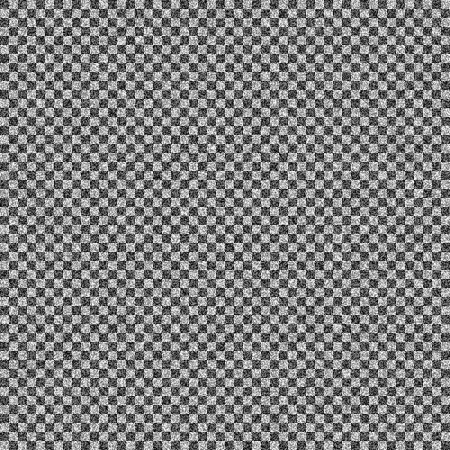
FFT magnitude spectra, fftshift'd and log-scaled for display.
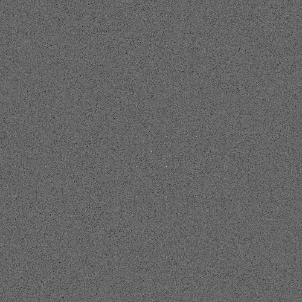
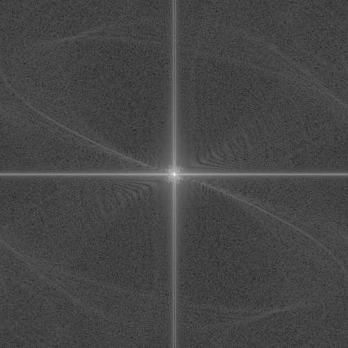
Sobel (horizontal, directional), Gaussian (σ=2.5), and derivative-of-Gaussian (DoG, single directional along x)
kernels are defined in hw1.py. Surfaces below use the same σ.
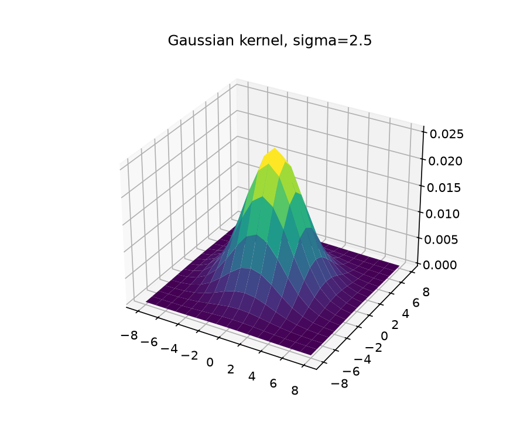
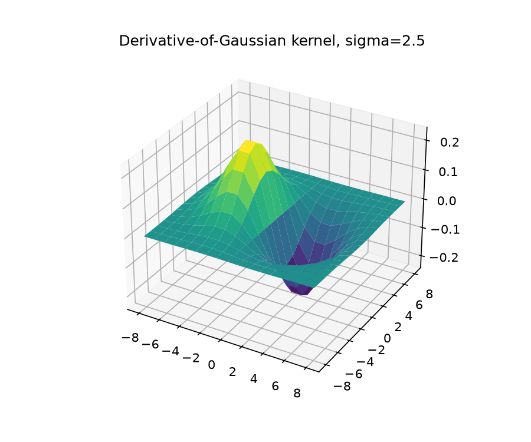
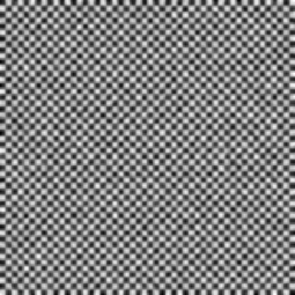
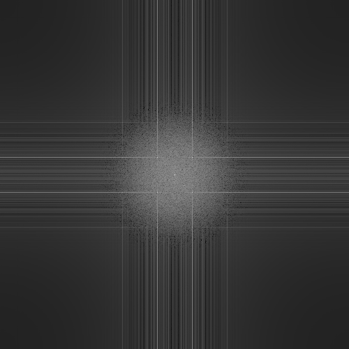
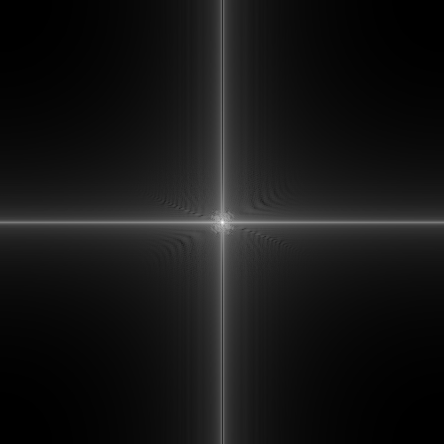
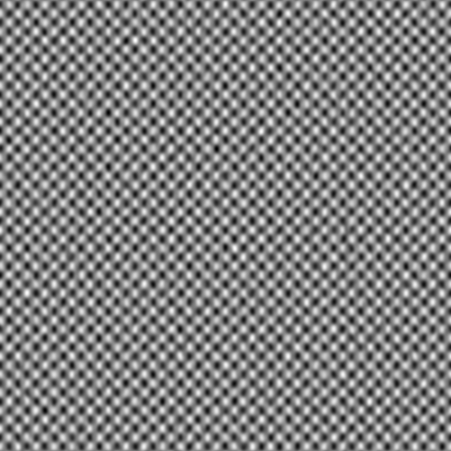
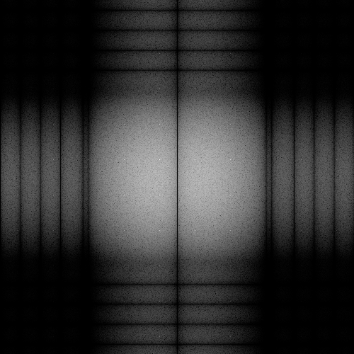
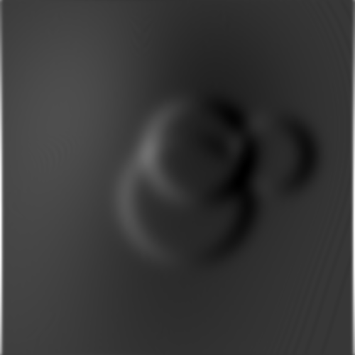
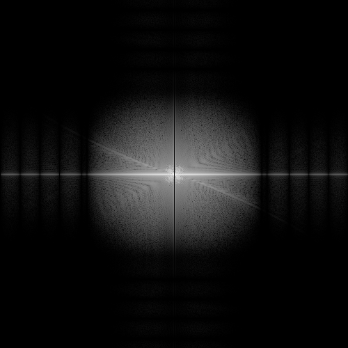
Subsampling at 1:2 and 1:4 ratios, with and without a Gaussian pre-filter (σ = factor / 2, chosen to attenuate content above the new Nyquist limit before decimation).
| Factor | Anti-alias σ |
|---|---|
| 2 | 1.0 |
| 4 | 2.0 |
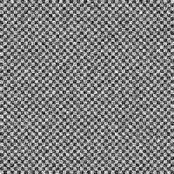
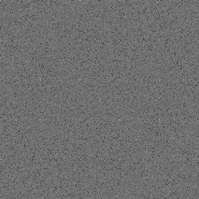
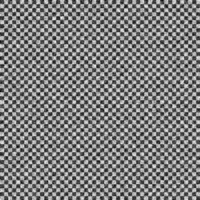
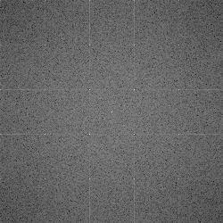
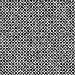
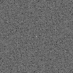
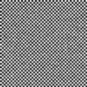
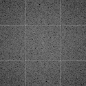
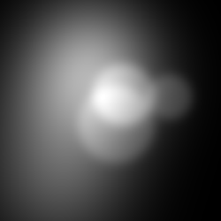
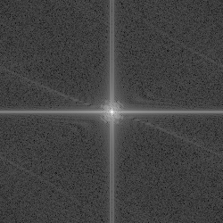
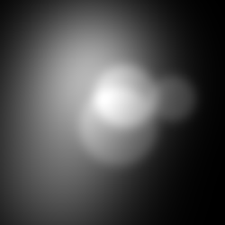
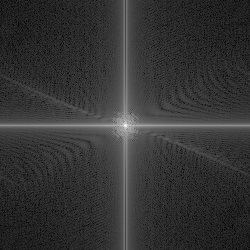
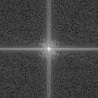
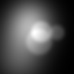
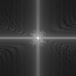
Each non-optimal variant nudges one threshold away from the optimal setting while holding the other fixed:
lowlow/highlow vary the low threshold down/up; lowhigh/highhigh vary the
high threshold down/up.
| Image | optimal | lowlow | highlow | lowhigh | highhigh |
|---|---|---|---|---|---|
| HP | 50 / 150 | 10 / 150 | 110 / 150 | 50 / 60 | 50 / 250 |
| LP | 8 / 25 | 2 / 25 | 18 / 25 | 8 / 12 | 8 / 60 |
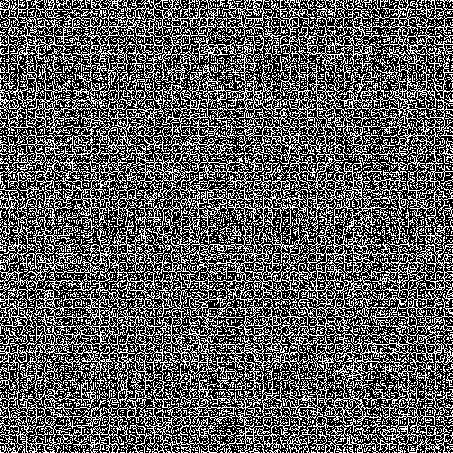
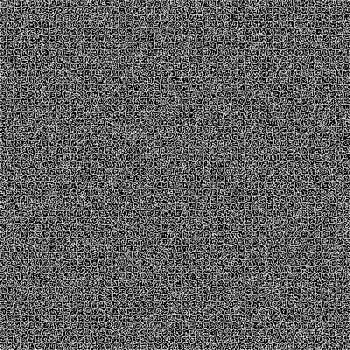
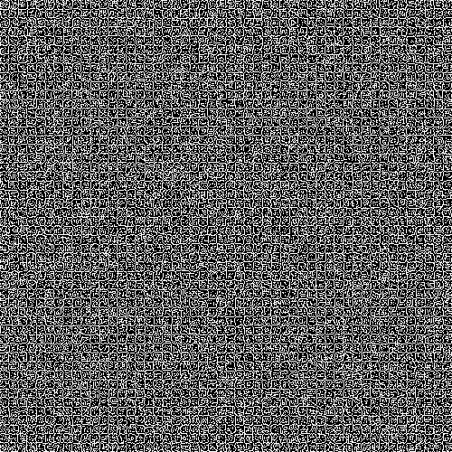
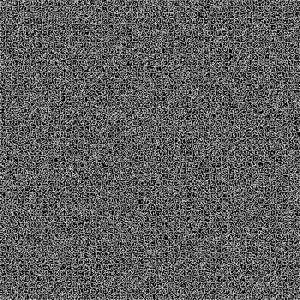


